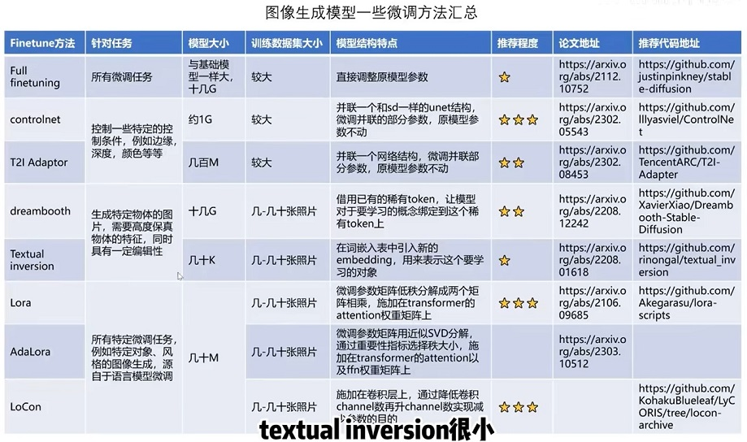
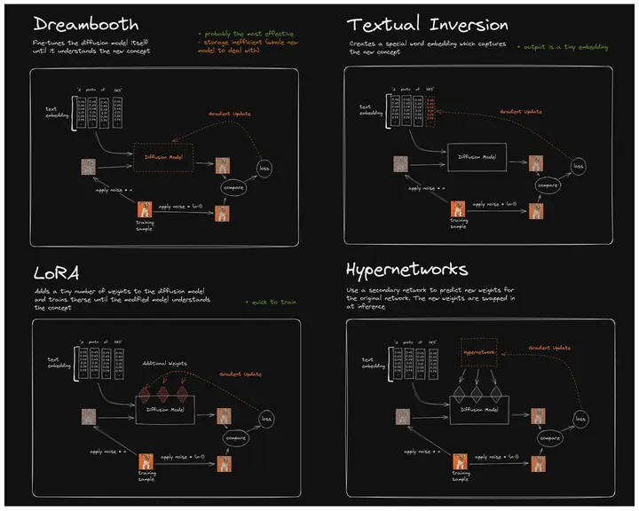

对比总结[1] #
| 训练方法 | 方法 | 局限性 |
|---|---|---|
| Text Inversion | 使用提供的一组图片训练一个新单词的Embedding ，并将其与词汇表中的已有单词关联起来，这个新单词即为这组图片概念的指代。 | 训练过程只对应 Embedding，扩散模型没有新知识输入，所以也无法产生新的内容。 |
| Full FineTune | 最朴素的方式，使用图片+ 标注的数据集，进行迭代训练，数据集标注可以选择BLIP来生成。训练直接对原模型的所有权重进行调整。 | 容易过拟合，导致生成图片的多样性不够，结果难以控制。模型体积大，不便于传播。 |
| Dreambooth | 提供代表某个新概念（instance） 对应的一组图像，并使用罕见字符（identifier） 进行概念Mapping，训练过程充分考虑原有相关主题（class）生成，避免过拟合。训练直接对原模型的所有权重进行调整。 | 训练过程只针对新概念 （instance），多样性差。如果需要多概念生成，需要多次训练。模型体积大，不便于传播。 |
| LoRA（w Dreambooth） | 冻结预训练模型参数，在每个Transformer块插入可训练层，不需要完整调整 UNet 模型的全部参数。训练结果只保留新增的网络层，模型体积小。 | 训练效果不如Dreambooth |
对比总结[2] #

对比总结[3] #

参考 #
- Stable Diffusion 微调及推理优化
- 【论文串读】Stable Diffusion模型微调方法串读 V
- Stable Diffusion——四种模型 LoRA（包括LyCORIS）、Embeddings、Dreambooth、Hypernetwork
实战 #
1xx. Text Inversion V 【这个比较详细】 1xx. lora Dreambooth V 【冻结不训练unet，只训练lora】 【为unet模型添加注意力层，注意力层是要训练的参数】 【大部分代码和Dreambooth差不多】
实战 #
1xx. + concept customization
dreambooth lora + textual_inversion diffusers
1xx. 手把手教你微调Stable Diffusion * lora on DreamBooth